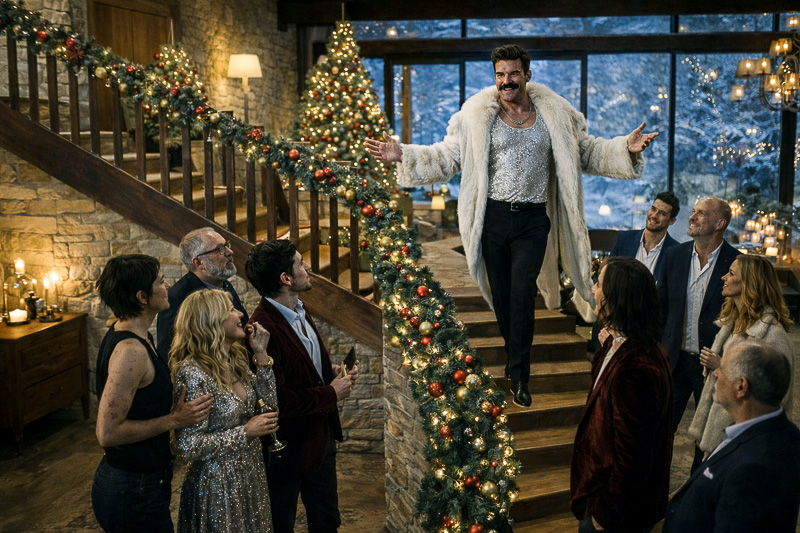

SINOPSIS
Una tormenta de nieve aísla la casa por completo. Se va la luz. Cae la calefacción. La comida empieza a escasear. Y desaparece la conexión a internet.
Sin señal, el grupo pierde su referencia externa y el equilibrio interno se rompe. Surgen tensiones, acusaciones y luchas por el liderazgo. El frío y el miedo precipitan decisiones imprudentes que tienen consecuencias irreversibles. Las muertes que siguen no resuelven el conflicto: lo intensifican.
El anfitrión, Macready, decide grabarlo todo. Si no pueden emitir el especial previsto, emitirán el desastre. La tragedia empieza a convertirse en material.

Cuando finalmente regresa la señal, la supervivencia ya no es el único objetivo. Lo ocurrido puede contarse, y quien controle la versión definitiva controlará el futuro profesional de todos.
La retransmisión comienza. El horror deja de ser íntimo y se convierte en espectáculo en tiempo real. El directo culmina en un asesinato ante la cámara.
La última imagen no es de rescate, sino de validación digital: una
mirada directa al objetivo mientras el contador de
likes
asciende.